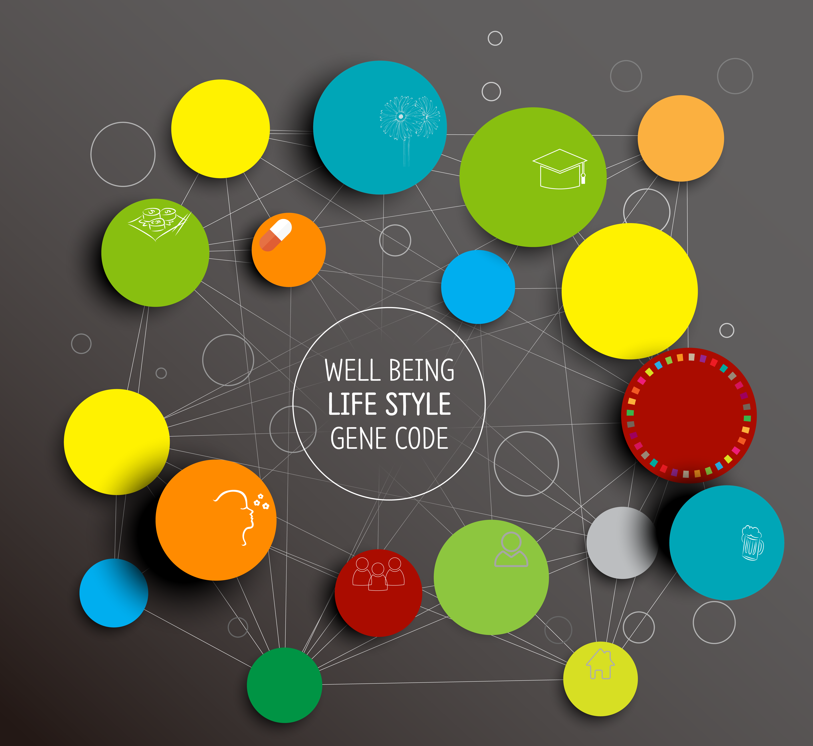
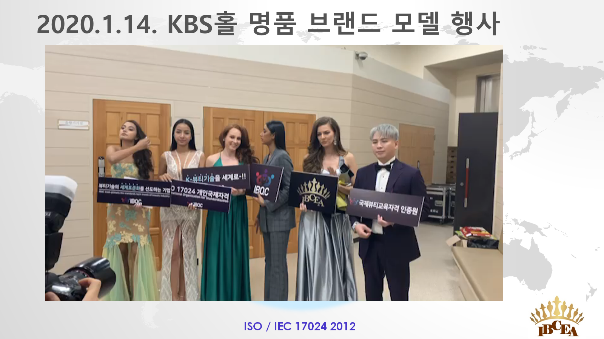
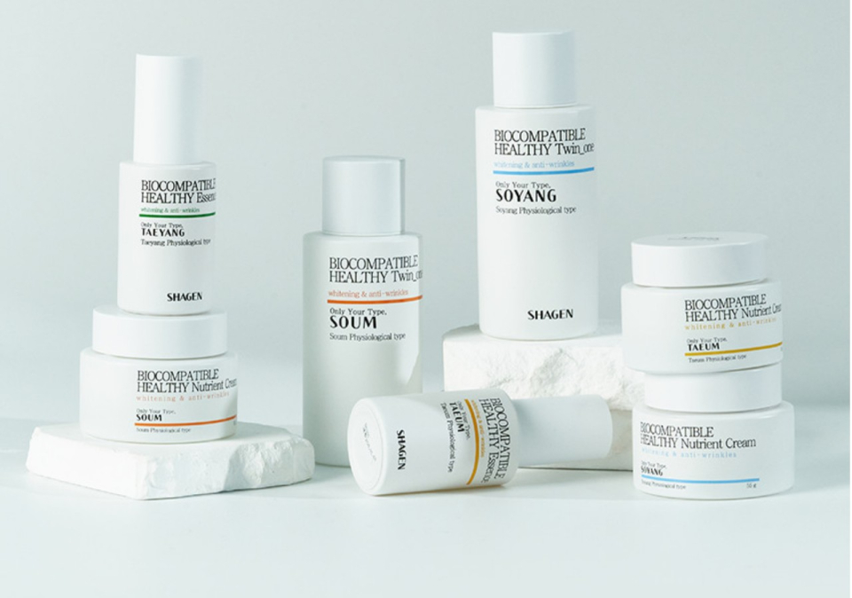
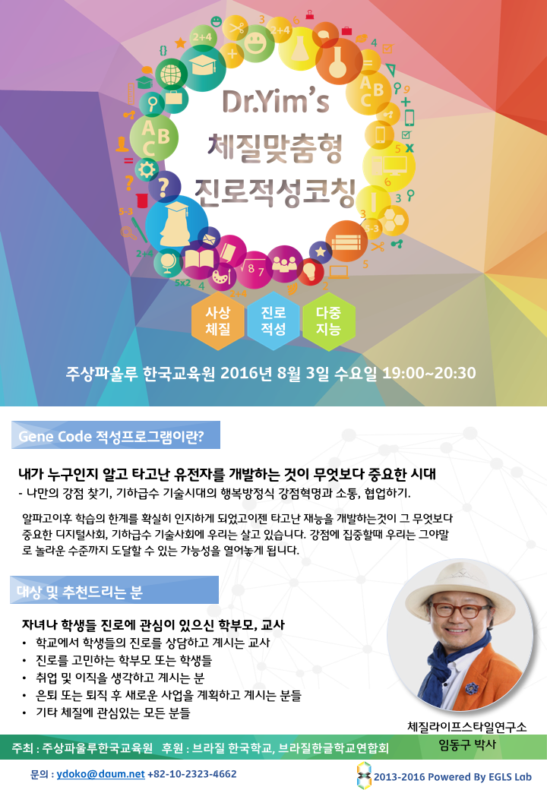
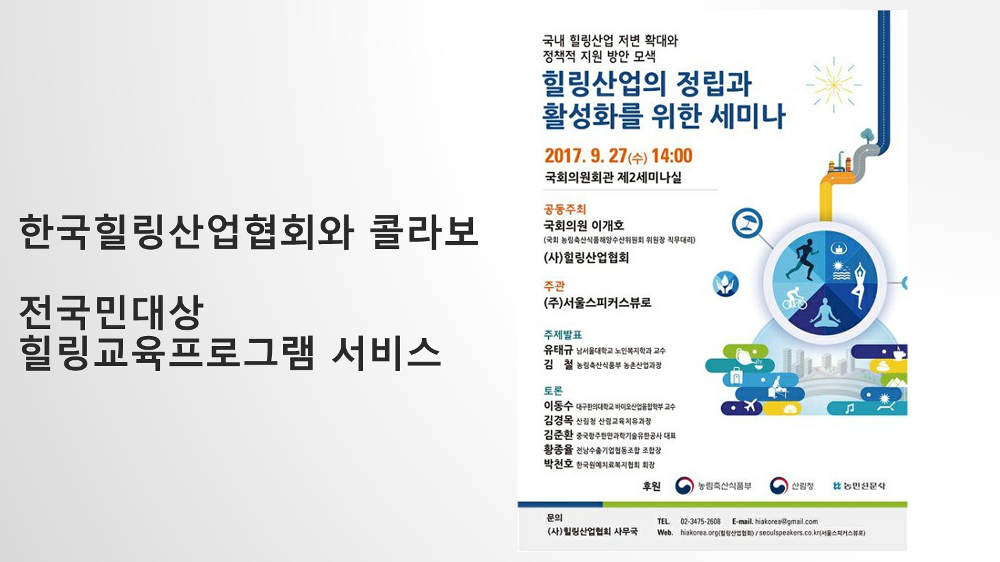
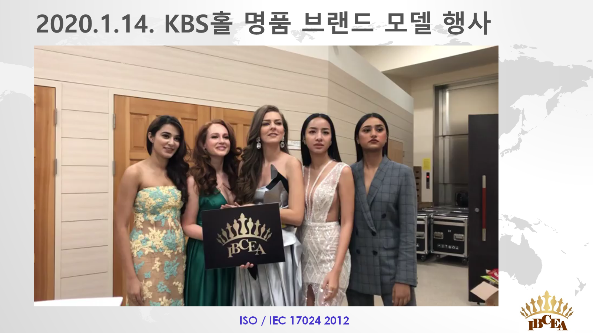
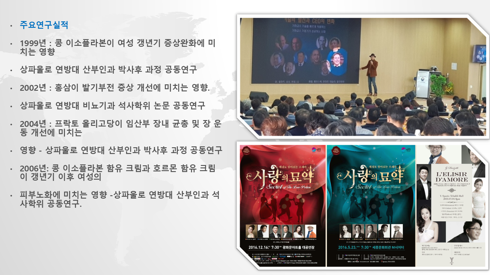
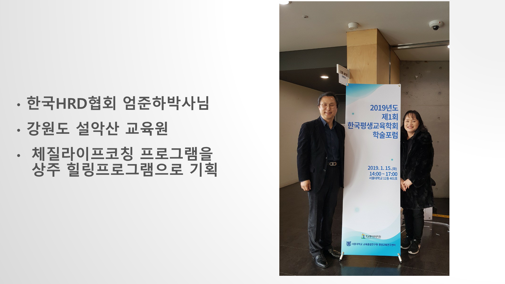

문제와 사람
목표, 체질 경향, 현재 상태, 환경과 금기를 함께 정의합니다.
사상체질의 확장력은 네 종류 상품이 아니라 사람을 이해하고 산업의 핵심 장면에 연결하는 공통 방법에서 나옵니다.
호텔은 객실·메뉴·스파가 달라지고, 학교는 학습·관계·진로가 달라지며, 앱은 리포트·추천·추적이 달라집니다.

목표, 체질 경향, 현재 상태, 환경과 금기를 함께 정의합니다.
고정 분류가 아닌 ‘어떤 조건에서 어떻게 반응하는가’라는 가설을 만듭니다.
공연의 배역, 화장품의 사용감, 교육의 활동처럼 핵심 접점을 선택합니다.
리포트·제품·수업·공간·콘텐츠로 경험하게 하고 안전 기준을 적용합니다.
이해도, 만족, 행동, 재방문, 이상반응을 측정해 다음 버전을 만듭니다.
원형 포스터·제품·현장·설명자료를 각 사례에 연결했습니다. 실행·산출물·기획 상태는 배지와 Evidence ID로 구분합니다.

체질별 정서와 관계 패턴을 배역·아리아·해설에 연결해 자기이해와 소통을 공연 경험으로 바꿉니다.

체질 해석을 피부 상태 질문, 원료 스토리, 사용 루틴과 묶어 ‘왜 나에게 이 마스크인가’를 설명합니다.

체질패션 자료를 런웨이 서사로 확장해 실루엣·색·움직임·음악의 차이를 체험하게 합니다.

태양·태음·소양·소음의 체질별 사용 맥락을 제품군으로 구현한 SHAGEN 원형입니다. 피부 고민과 계절, 사용순서, 생활 조언을 함께 큐레이션합니다.

유정근이 기획·진행한 Gene Code 체질맞춤형 진로적성코칭 원형입니다. 사상체질·진로적성·다중지능을 함께 살펴 직업 하나로 단정하지 않는 탐색 워크숍으로 설계했습니다.

유정근의 체질 아로마테라피 원고를 기반으로 향 선호와 현재 감정·공간·사용 목적을 함께 큐레이션합니다.

막걸리 시음·술빚기를 기호, 음식 궁합, 절주 안내, 지역문화 체험과 연결합니다.

분석·상담·푸드·아로마·명상·DIY를 순차 경험하게 하여 단일 강의를 하루의 여정으로 확장합니다.

사람을 체형에 가두지 않고 선호 실루엣·소재·색·상황을 묻는 스타일 큐레이션으로 번역합니다.

설문·식품선호·유병률 문헌을 연구 질문으로 만들고 분석 방법과 한계를 함께 기록합니다.

체질 경향을 수면·식사·활동·스트레스의 실천 질문으로 전환합니다.
좋고 나쁜 음식표를 넘어 선호, 금기, 계절, 장소, 식후 반응을 관찰하는 메뉴·쿠킹·투어 경험으로 만듭니다.

유전 연관 가능성은 연구하되 특정 SNP가 체질이나 운명을 결정한다고 말하지 않습니다.
분야별 이미지를 보고 키워드를 누르세요. 연결된 공개 포트폴리오 목록에서 바로 원형 상세 페이지로 이동할 수 있습니다.
 삶과 관계
삶과 관계키워드를 누르면 연결된 포트폴리오가 열립니다.

교육과 성장키워드를 누르면 연결된 포트폴리오가 열립니다.
 건강과 웰니스
건강과 웰니스키워드를 누르면 연결된 포트폴리오가 열립니다.
키워드를 누르면 연결된 포트폴리오가 열립니다.
푸드와 제품키워드를 누르면 연결된 포트폴리오가 열립니다.
 관광과 경험
관광과 경험키워드를 누르면 연결된 포트폴리오가 열립니다.
콘텐츠와 미디어키워드를 누르면 연결된 포트폴리오가 열립니다.
 기술과 데이터
기술과 데이터키워드를 누르면 연결된 포트폴리오가 열립니다.
과학융합과 연구키워드를 누르면 연결된 포트폴리오가 열립니다.
 사업과 확장
사업과 확장키워드를 누르면 연결된 포트폴리오가 열립니다.
공동연구, 원형자료 요청, 강의·교육, 제품·프로그램 공동개발과 국내외 파트너십을 제안해 주세요.